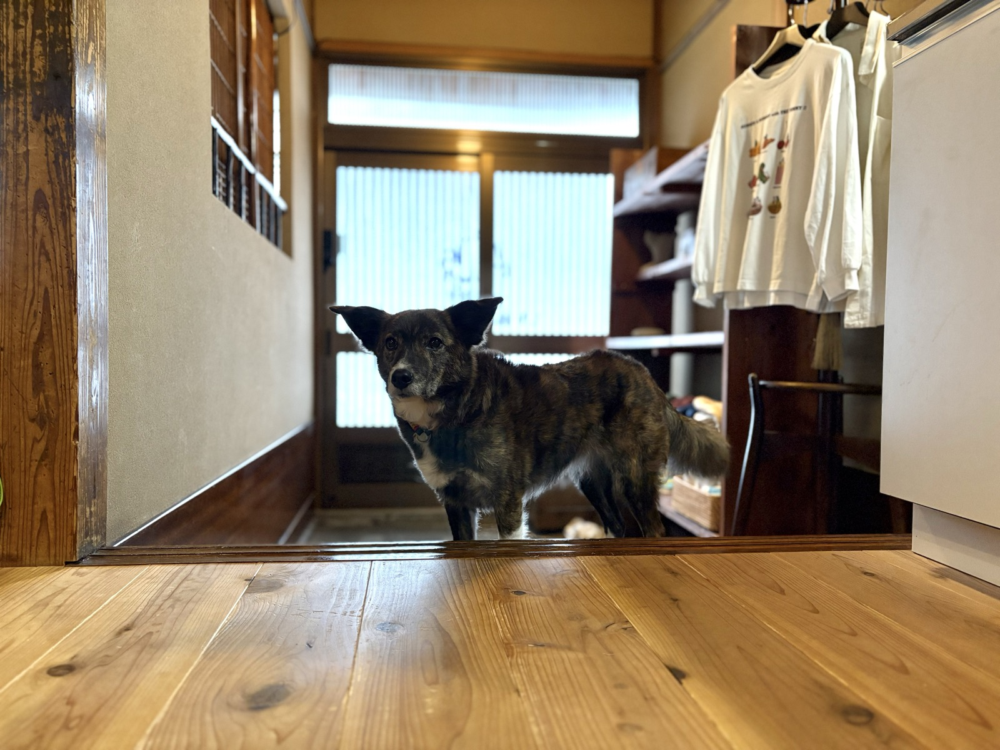

行動診療
吠える、咬む、留守番できない。
「困った行動」には、理由があります。
しつけの問題として片づけられがちな行動も、不安や体の変化が背景にあることが少なくありません。 おおたはら動物診療所では、獣医師がご自宅に伺い、その子の暮らしごと様子を見ながら、 原因の整理とご家庭でできる対応をご提案します。
LLINEで相談するしつけ教室とは、
役割が違います。
行動診療は、問題となっている行動を「医学的に評価」し、体の状態・環境・ご家族の関わり方まで含めて原因を整理していく、獣医療の一分野です。
吠えや咬みつき、留守番中の破壊、粗相といった行動の裏には、痛みや不調、不安、加齢に伴う変化などが隠れていることがあります。 まずそこを確認し、必要に応じてかかりつけの先生と連携しながら、環境の調整・ご家庭での接し方・場合によっては不安をやわらげるお薬を組み合わせて、その子と暮らしやすい状態を目指します。
トレーニングそのものを行う訓練士とは役割が異なり、担当するのは獣医師です。 「どこに相談すればいいのか分からない」という段階でのご相談も歓迎します。
症例によって
個別にお見積もりします。
行動診療に「初回カウンセリング」はなく、最初から行動診療を行います。 費用はカルテ作成料＋行動診療代＋（状況に応じて）お薬代です。 対象となる行動や必要な回数がその子によって大きく変わるため、状況をうかがったうえで、 対応プランと費用をお見積もりします。
提携先のこばやし動物病院で受診される場合は、病院の料金体系でのご案内となります。 どちらが合うかも含めてご相談ください。
まずは、
お話を聞かせてください。
料金について：カルテ作成料＋行動診療代＋（状況に応じて）お薬代となります。
その行動、
相談していいのか迷っていませんか。
来客に吠え続ける
唸る・咬もうとする
物を壊してしまう
おしっこをする
追い回す・威嚇する
夜鳴き・徘徊が増えた
終わらせなくて大丈夫です。
訪問だからこそ、
見えるものがあります。
診察室でよく
お聞きするのは。
少しだけ、
自己紹介させてください。
獣医師の大田原こと美です。日本大学 獣医学科を卒業後、沖縄・愛知の動物病院に勤務し、愛知では往診も 担当してきました。現在は東京都内2施設・埼玉県内の動物病院に勤務し、いずれの施設でも行動診療を担当するほか、 東京農工大学 行動診療科での研鑽と日本獣医動物行動学会での活動を続けています。
「できるようにさせる」よりも「安心できる環境を整える」こと。できない日はやらない——それもその子のための選択だと考えています。
気になることは、
事前に。
読みもの。
その行動のこと、
聞かせてください。
どう相談していいか分からない段階でも構いません。
まずはLINEでメッセージをお送りください。
行動診療は、かかりつけの動物病院での診療（診断・処方）に代わるものではありません。体の病気が疑われる場合は、かかりつけ医の受診をおすすめしています。